Agentic Interfaces
Tools, Skills, Generative UI and WebMCP
Wes Bos × @wesbos × wesbos.com
Tools, Skills, Generative UI and WebMCP
Wes Bos × @wesbos × wesbos.com
But the way we interact with the web is certainly changing.
I switched from HandBrake to ffmpeg because typing "make this video into a 1080p mp4" is easier than a checkbox mess.
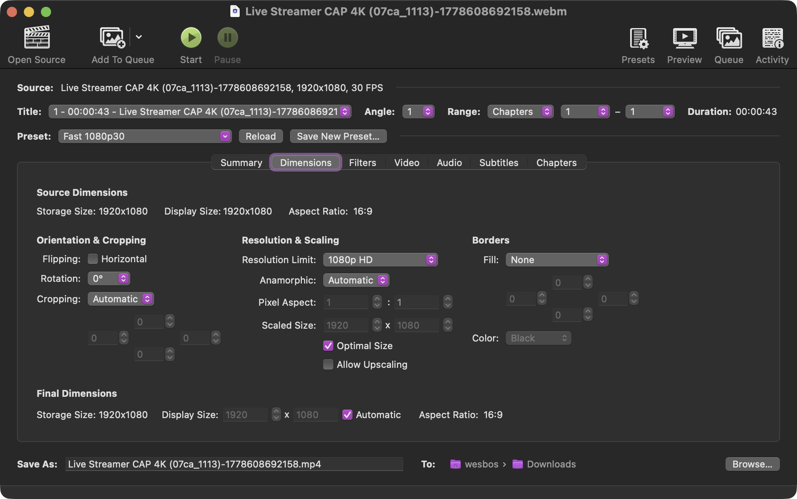
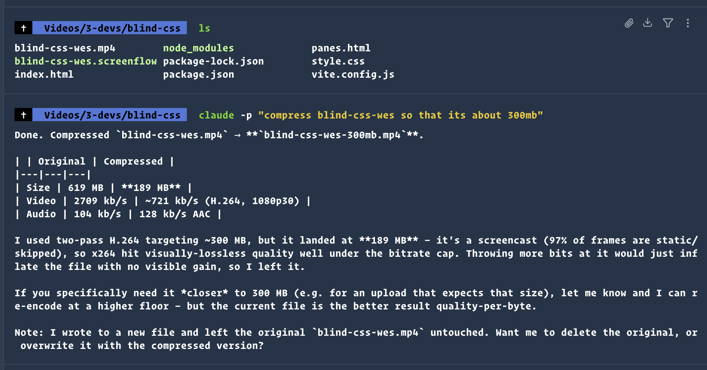
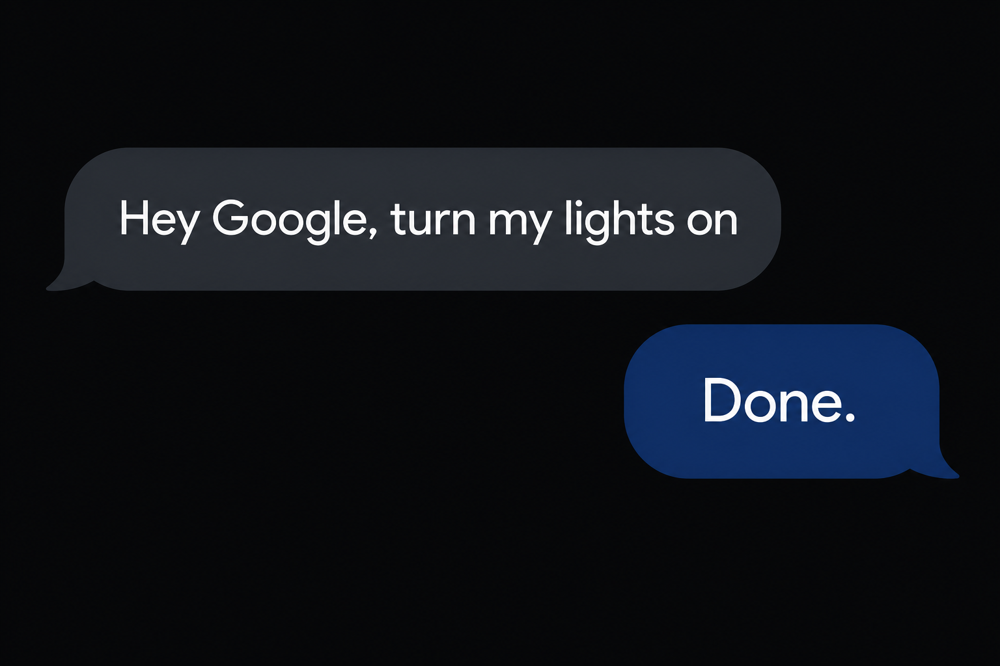
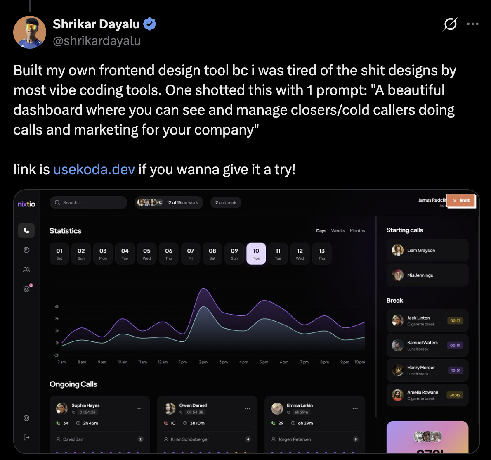
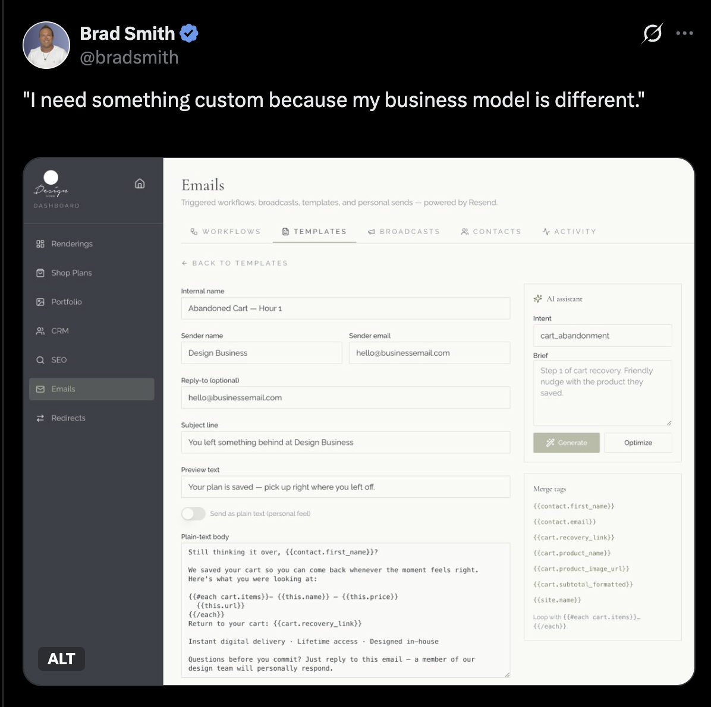
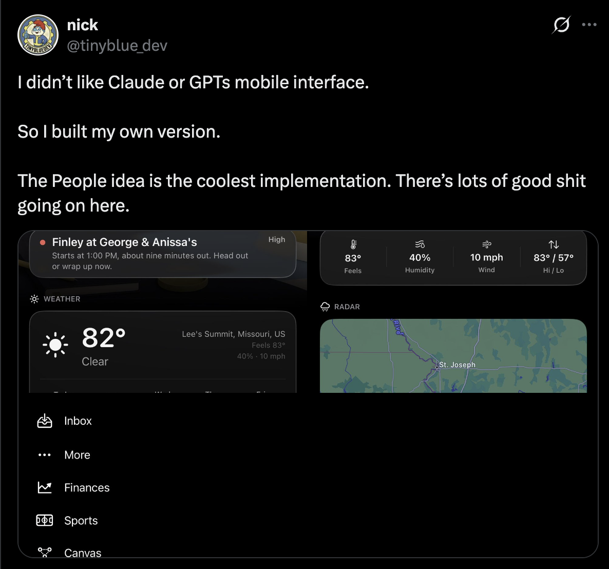
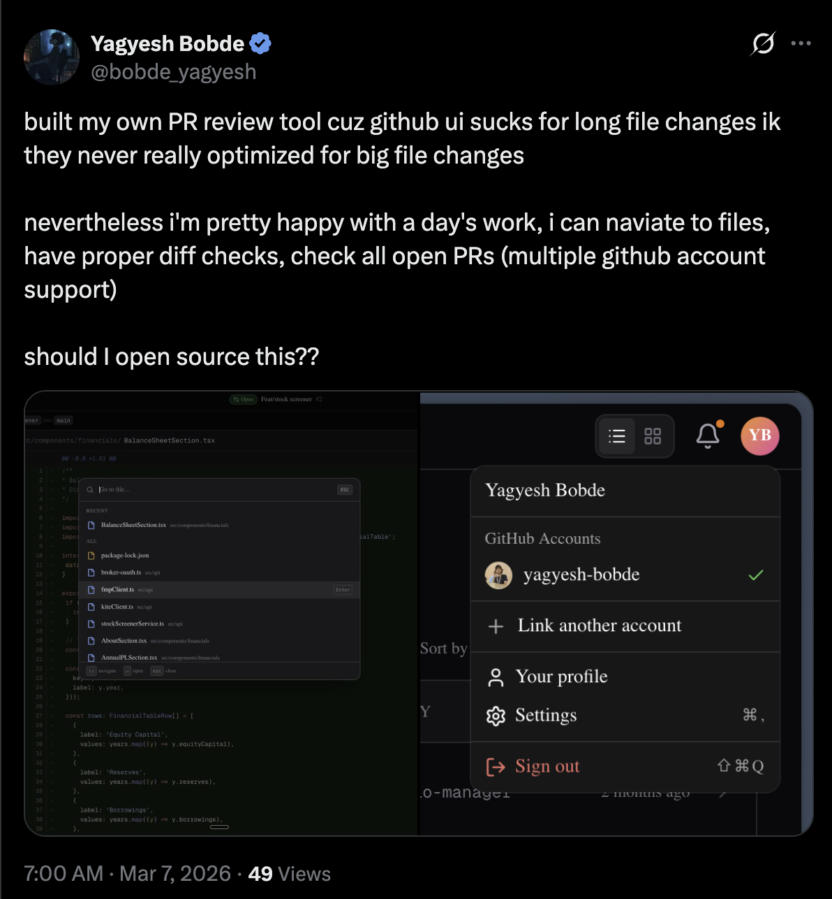
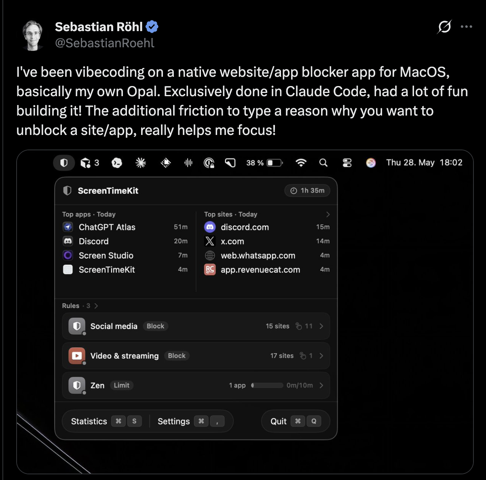
How do we as developers implement these interfaces?
Here is a tool call. Instead of returning raw data, it will also return the UI.
You have a whole bag of possible components. You let the agent figure out which ones to use. Return a JSON spec, reconcile against components. Implement in web, native, whatever.
Let the AI just generate it all. Give it a place to run code.
We're seeing this with "Code Mode" right now. Instead of only giving the agent tools, what if we also gave it a spot where it could just run any code?
My lights should just turn on when it thinks they should.
In some cases I just want to yell at my smart speaker.
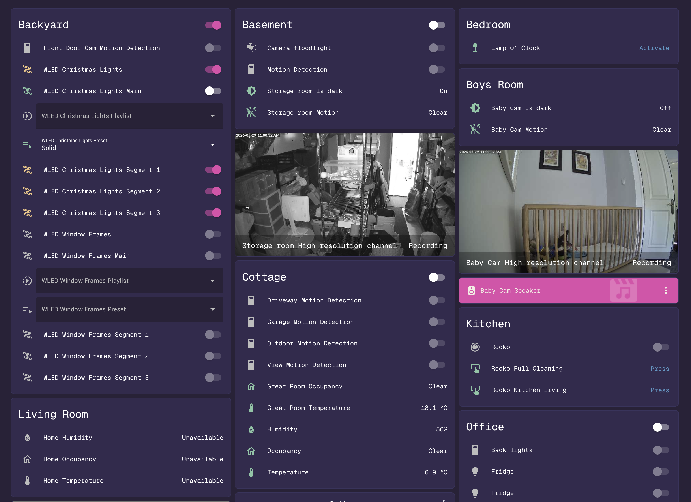
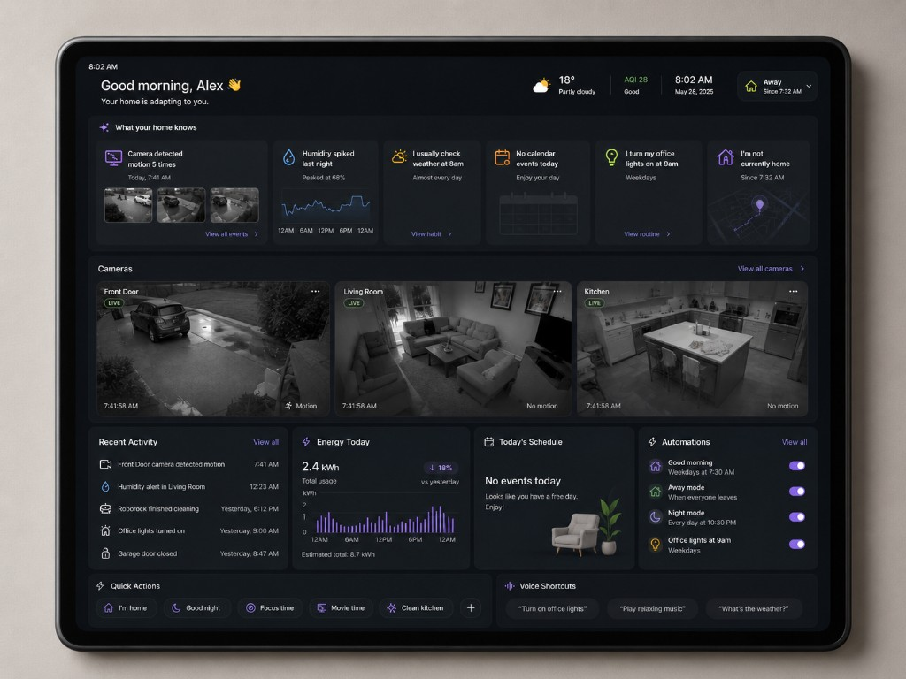
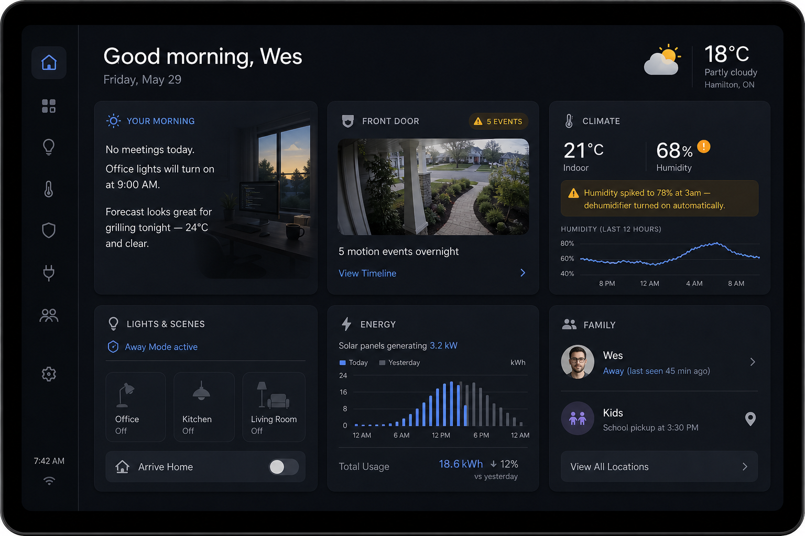
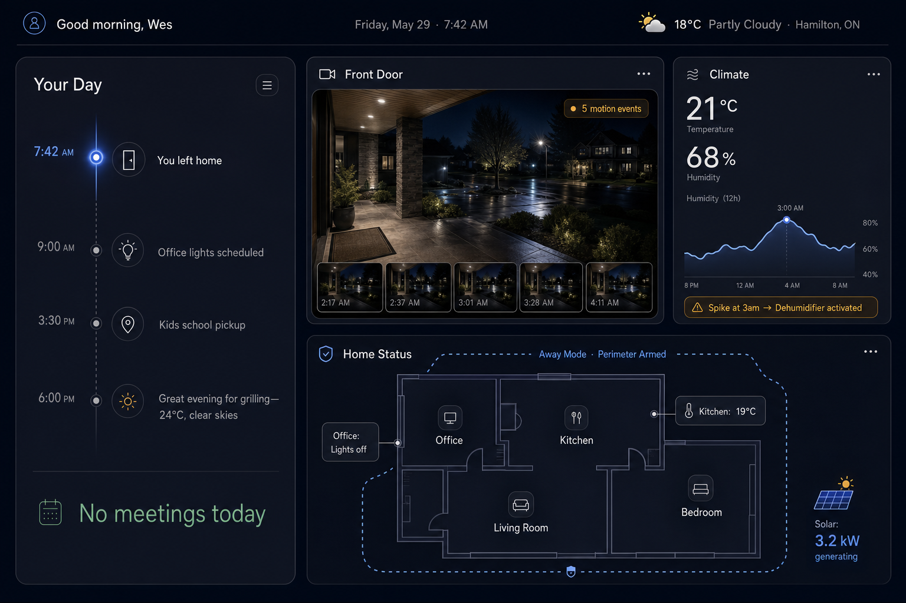
You expose your existing website functionality using the existing semantics of the web — declarative HTML API and imperative JS API.
<form
toolname="add_item"
tooldescription="Add a grocery item to a store."
toolautosubmit=""
>
<select name="store_id"
toolparamdescription="Target store">
</select>
<input name="item_name"
toolparamdescription="Item name" required />
<button type="submit">Add</button>
</form>navigator.modelContext.registerTool(
{
name: "get_stores",
description: "List stores and item counts.",
inputSchema: { type: "object", properties: {} },
annotations: { readOnlyHint: true },
execute: () => JSON.stringify(stores, null, 2),
},
{ signal: controller.signal },
);// Get a list of tools
const tools = navigator.modelContextTesting?.listTools();
// Run a tool (usually run by an agent)
await navigator.modelContextTesting?.executeTool(
"get_stores", "{}"
);Have the agent do the first pass. Jump in with clicks where it matters.
Will the airline simply want to be distilled down into a utility? Seat selection upsells, scare-tactics for insurance. As a user I want this, but I doubt businesses will totally buy in.
Just like when mobile and voice hit. It's on us as developers to figure out which of these interfaces will work to provide delightful interfaces for our users.
@wesbos